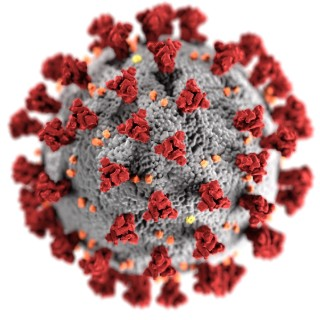
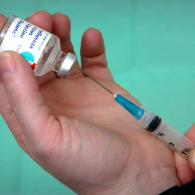

What is Coronavirus? Is it a virus or is the government trying to hide something from us? Are they trying to distract us from something? Possibly distract us from the elections. Did you know that on the CDC website the Caronavirus deaths have dropped significantly? Why is everyone making such a big fuss over this still? In the beginning when the deaths were higher they were only allowing certain people to get tested. Now EVERYONE is getting tested, so of course the number of positives are higher but that doesn't mean it's deadly. The results of the test are not even reliable. So many people have just signed into getting the test and left and they have recieved positive results. How is that possible?! Let us just say that it is not possible. View full Blog
Is a piece of cloth over your mouth going to prevent you from contracting a "deadly disease"? Multiple doctors and scientists have said that the mask will not prevent your from getting Coronavirus. The particles of it are too small and they go straight through the mask. They also can go in on the sides if it is not a N95 mask that has been fitted to your face. It is so weird going into Walmart and seeing EVERYONE with masks. I hate it when people start talking about this being the "new normal". Do masks really there to protect us? But why are we being forced to wear one even if we are not sick? Why are our freedoms being taken away? Right now we can't enter that store without a mask and in 6 months when they release the vaccine (that has not been properly tested) that will be another requirent. View full Blog
What is really in a vaccine? More specifically, a Coronavirus vaccine. First off, it has aborted baby DNA! That seems a bit wrong. But I also speculate if it has a chip in it. I know in the New Testament it prophesies that we will be chipped. President Trump also made it seem as if this vaccine is going to be manditory. Once again, our freedoms are being taken away. We should have medical freedom to decline it if we see fit. It was also said that the military will be sent out to make sure everyone gets it. What happens if someone does not want it? Are we goint to be forced? Are we goint to be allowed to go to work? Will we be allowed to fly without proof of the vaccine? I hope this is a conspiracy because this is so far away from being constitutional. View full Blog
Why is there a coin shortage? Shouldn't we have a hand sanatizer shortage or a shortage of masks? Why coins? Are we slowly but surely moving towards a cashless society? What will that mean? It means that our freedom is being taken away. We have a coin shortage because the workers making coins are not considered "essential workers" like Walmart workers or Amazon workers. But why? Are they not considered essential for a reason? Is this part of the Secret Combination? If we are cashless they have complete control and can see everything we do with our money. They have control of us and our funds! That is not constitutional. We should have every right to have cash saved and have it to use however we see fit. View full Blog